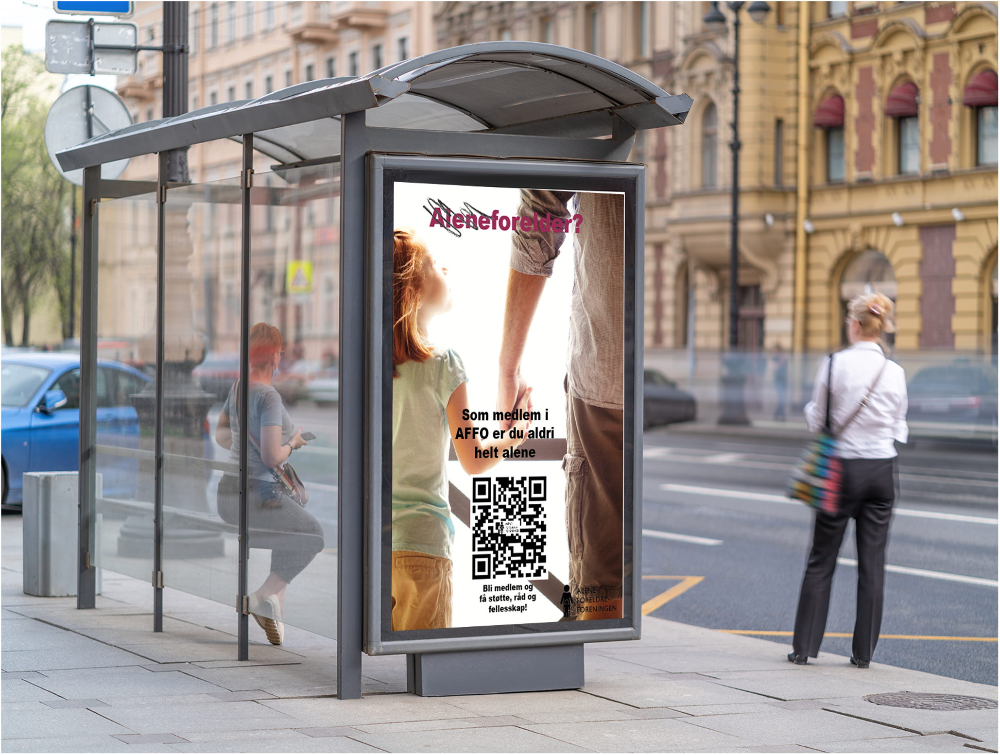

01 / 04
Kampanje
En mockup som viser hvordan kampanjen kan se ut på ulike tog- og busstasjoner, steder hvor aleneforeldre ofte kan befinne seg. Plasseringen er derfor strategisk valgt for å gjøre kampanjen synlig for målgruppen i hverdagen. Symbolet med kryss over ordet «alene» er brukt som et visuelt virkemiddel for å tydeliggjøre budskapet om at aleneforeldre ikke skal føle seg alene.